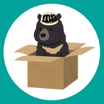

質問受付期間までお待ち下さい

2019/03/24
1 回答
エアコン、冷暖房ってありますか。
2019/03/20
1 回答
麻雀を一から教えてもらうことは可能ですか？
2019/03/16
1 回答
自炊してる方はいらっしゃいますか？キッチンのようなスペースはあるんでしょうか
2019/03/15
2 回答
情報学科の人は、デスクトップを買うべきですか？それともノーパソを買うべきですか？
オススメの機種などがあったら教えて下さい！！
2019/03/12
2 回答
熊野寮生はその他の京大生と比べて留年率高いとかってあります？全学部的にも工学部的にも知りたいです！
2019/03/11
2 回答
寮生活のなかで1人になりたい気分の時はどうしているんですか？
2019/03/06
1 回答
入寮面接に事前予約は必要ですか。
2019/03/04
1 回答
麻雀大会は原則寮生のみの参加ですか？
2019/02/28
1 回答
熊野寮パンフ面白かったです！
議論についての項目は国会討論などを見る際にも参考になりました…
2019/02/27
1 回答
熊野寮に住んでる人って他の京大生からどんな印象持たれてますか？やっぱ苦学生？
2019/02/27
1 回答
寮生で最年長の方は何歳くらいですか？
2019/02/26
1 回答
各ブロック(A1,・・・,A4)の呼びかたはどうなってますか （階を表す数字部分を日本語読みするか英語読みするか）
2019/02/22
2 回答
入寮手続きをしたら、その日にすぐ入居できますか。
2019/02/22
1 回答
シャワールームはお湯が出る？
2019/02/22
1 回答
2人部屋は全部、3部屋を6人が使うという6人部屋になっていますか？
2019/02/22
2 回答
昨年赤本燃やす会みたいなイベントが入試後に開催されていたような記憶があるのですが（記憶違いだったらすみません）、今年度は入試後に何らかのイベント開催の予定はありますか？
2019/02/22
1 回答
入試後や合格発表後に入寮出願とは別に見学に行きたいと思っているのですが、事前連絡をすべきでしょうか？
（以前の質問に“見学リピーターですw”みたいな方は迷惑だと書かれていたので少し気になってしまって…）
2019/02/22
1 回答
熊野寮のパンフって入試当日はど何時頃に、どの辺りで配布されますか？
2018/12/08
1 回答
寮生の一ヶ月の生活費はどれくらいですか
2018/12/03
1 回答
中核派など、いわゆる過激派とされる人達はいますか？ いる場合、内部抗争などはありますか？
あと、寮内での恋愛はありますか？ 恋愛があったとして、寮内で行為を致すのは禁止ですか？
様々な専門の人が居住していると思いますが、その中で異分野の連携や新たな学術分野が生まれたりしますか？